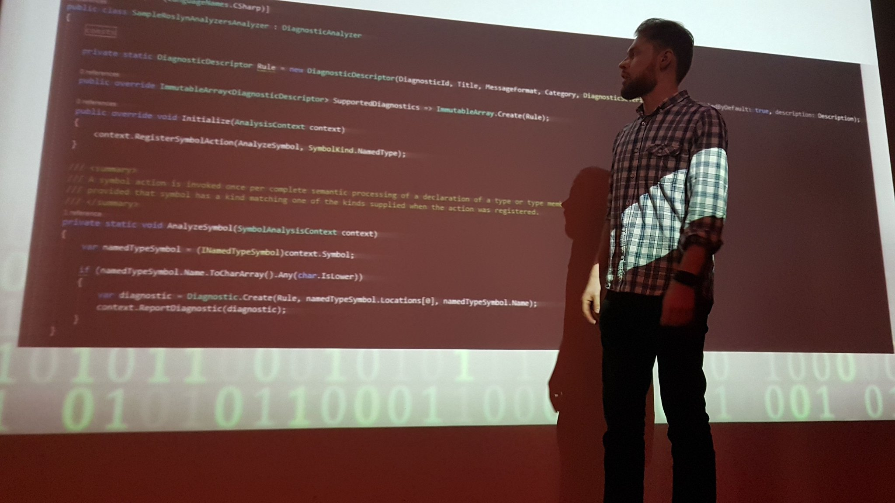

Public speaking

Upcoming 🔗︎
currently nothing in the bucket list
Past 🔗︎
- [2019-03-21]
"Jak usprawnić proces wytwarzania oprogramowania przy pomocy Roslyn"- 124. spotkanie Warszawskiej Grupy .NET - [2019-02-19]
"Jak usprawnić proces wytwarzania oprogramowania przy pomocy Roslyn"- 115. spotkanie Wrocławskiej Grupy .NET - [2019-01-15]
"Tworzenie łatwych w utrzymaniu oraz stabilnych testów UI"- KraQA #36 - [2018-12-04]
"Programisto, rozwijaj się!"- Dzień IT Politechniki Krakowskiej - [2018-11-07]
"Jak usprawnić proces wytwarzania oprogramowania przy pomocy Roslyn."- 114. spotkanie KGD.NET - [2017-11-30]
"Narzędzia programistyczne, które zwiększą twoją atrakcyjność na rynku pracy"- Dzień IT Politechniki Krakowskiej - [2017-10-25]
"Tworzenie łatwych w utrzymaniu oraz stabilnych testów UI dla aplikacji ASP.NET"- 107. spotkanie KGD.NET - [2017-02-08]
"Highly maintainable UI with ASP.NET MVC"- 102. spotkanie KGD.NET - [2016-08-05]
"Analiza jakości kodu z wykorzystaniem 'Resharper - search with pattern'"- MMCC Conference